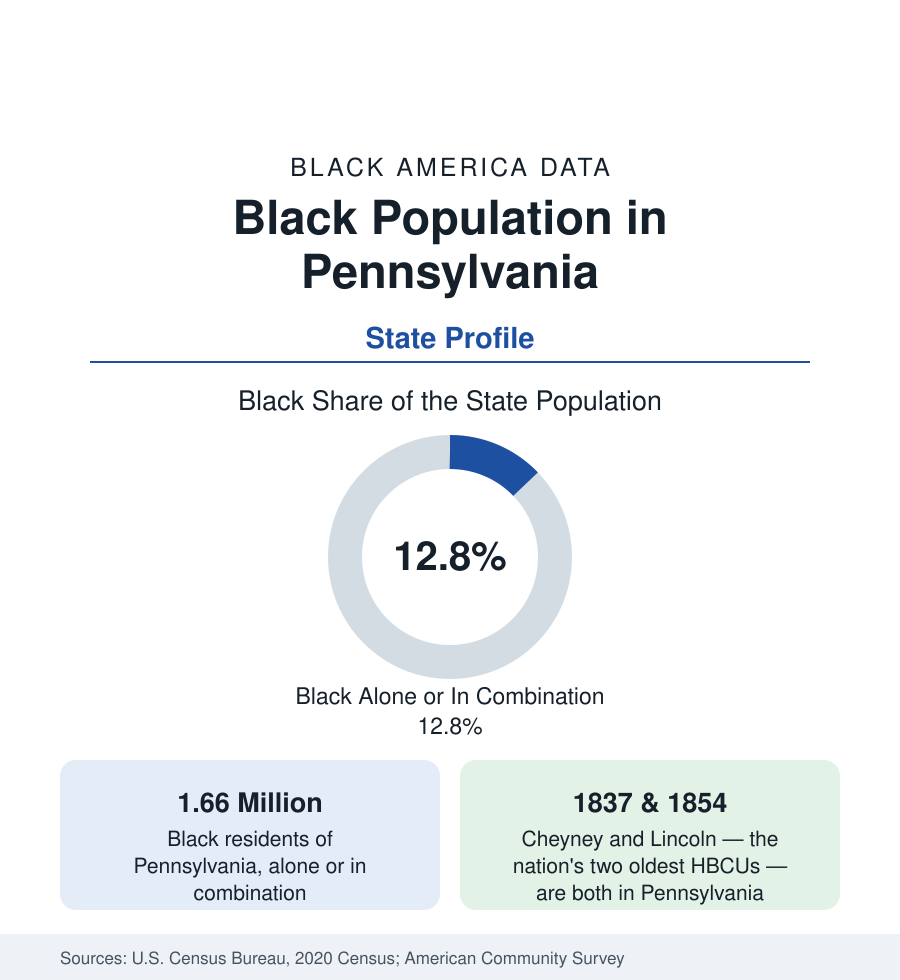

Black Census
Black Population in Pennsylvania: Between Philadelphia and Pittsburgh
About 1.66 million Black Pennsylvanians — one in eight residents — anchored by the nation's sixth-largest Black metro and the two oldest HBCUs. The census profile.

Pennsylvania holds about 1.66 million Black residents — Black alone or in combination — roughly one in eight of its people, with Black alone at about 1.42 million, or 11 percent. The state's Black population is a tale of two metros: Philadelphia, profiled in the cities section, holds the large majority; Pittsburgh, the western anchor, holds the second concentration; and between them a band of smaller industrial cities — Harrisburg, Allentown, Erie, Reading, York, Scranton — carries the rest. Pennsylvania also holds the nation's two oldest historically Black universities. This article profiles the state population.
The Two Anchors
Philadelphia's region accounts for roughly two in three Black Pennsylvanians: the city's 680,000, the suburban counties' growing populations, and the adjoining industrial cities of Chester (a small city roughly three-quarters Black, among the highest shares in the Northeast) and Norristown and Coatesville. Pittsburgh, 300 miles west, is a different Black world: the city is more than a fifth Black — about 70,000 people — centered historically on the Hill District, the neighborhood that produced a famous generation of American drama and music and was largely demolished for a civic arena in the 1950s, displacing some 8,000 residents in the clearance the historical record documents; the metro's Black population, about 200,000, spreads through the Mon Valley steel towns (McKeesport, Duquesne, Clairton) whose mills' collapse wrote the region's modern data.
The Small-City Band
Between the anchors, the industrial corridor cities each hold substantial communities. Harrisburg, the capital, is about half Black within its small city limits — a state-government and logistics community ringed by suburbs where the Black population grows. Allentown and the Lehigh Valley record Black shares in the mid-teens and rising with the warehouse economy. Erie, on the lake, is roughly a sixth Black; Reading and York, in the mid-teens to a quarter, with large Latino populations beside them; Scranton and Wilkes-Barre, the anthracite cities, in the range of a tenth. Johnstown, Altoona, and the coal and rail towns carry smaller, old communities. The state's rural majority — the famous 'T' of counties between the metros — records Black shares in the low single digits.
The Oldest HBCUs
Pennsylvania's Black education layer is the nation's founding layer. Cheyney University, founded in 1837 as the Institute for Colored Youth, is the oldest historically Black institution in the United States; Lincoln University, founded in 1854, was the first degree-granting HBCU and educated a generation of African and Caribbean independence-era leaders alongside its American alumni. Both sit in the state's southeast, within the Philadelphia region's orbit, and both are public institutions in the state system — small in enrollment now, carrying a historical weight their size understates, and central to the state's Black professional formation across two centuries.
Composition and Change
The estimates show a slowly growing Black Pennsylvania: Philadelphia's suburbs and the Lehigh Valley and Harrisburg regions gaining, Pittsburgh's metro roughly stable, the small industrial cities mixed. The composition layers the corridor pattern — one of the East's larger Caribbean populations in the Philadelphia region, growing African communities in both metros — over a native-born base among the oldest in the North. Indicators run the Rust Belt pattern with an eastern tilt: Philadelphia-region Black medians above the state's, Pittsburgh's below, attainment rising through the large public university systems whose Black enrollment the education section tracks.
Reading the Pennsylvania Numbers
Steel, Coal, and the Migration's Western Door
Pittsburgh's Black community was built by the steel economy's appetite for labor: the mills of the Mon Valley and the city's great industrial employers drew migrants from Alabama and the Carolinas from the First World War onward, and the Hill District became, in the interwar decades, one of the most celebrated Black neighborhoods in America — its jazz scene, its Crawford Grill, its championship Negro league teams at Greenlee Field. The mills' collapse in the 1980s removed the region's economic engine in a single decade, and the Black data since — population dispersal to the eastern suburbs and the South, an age structure weighted old in the valley towns — record the long adjustment that the eds-and-meds economy has only partly answered.
Pennsylvania should be cited as two metro profiles with a shared statehouse: the Philadelphia two-thirds and the Pittsburgh seventh resemble each other less than each resembles its own region. The state figure — one in eight — is the sum, and the small-city band between the anchors is where the state's Black future growth is actually occurring, in the warehouse corridors of the Lehigh Valley and the capital region.
More in Black Census
The Black Population of the United States: Size, Definitions, and Distribution
The Black population of the United States totals 52.8 million — 15.4 percent of the nation. How the Census Bureau defines and counts the population, and where it lives.
Black Median Household Income in the United States
Black median household income stands at $56,490 in the Census Bureau's annual income report — how the figure is measured, how it compares, and what drives it.
The Black Poverty Rate: Levels, Children, and the Long Trend
The official Black poverty rate is 17.1 percent — against 11.1 percent nationally and 7.7 percent for non-Hispanic White Americans. How poverty is measured and what the data show.
Source: U.S. Census Bureau, 2020 Census; American Community Survey; Population Estimates Program.